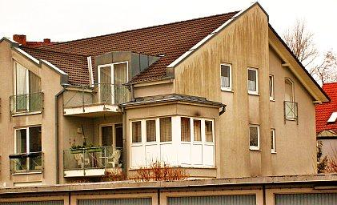
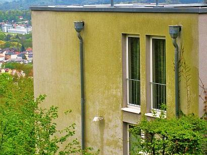
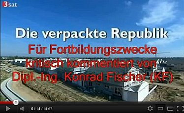
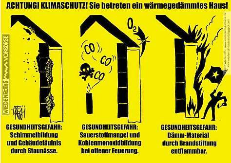
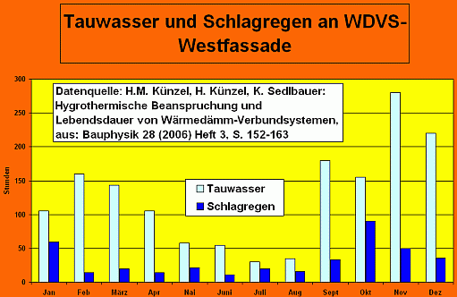
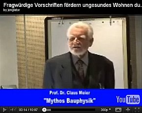
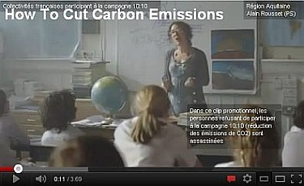

Inhaltsverzeichnis - Sitemap - über 1.500 Druckseiten unabhängige Bauinformationen
Inhaltsverzeichnis - Sitemap - über 1.500 Druckseiten unabhängige BauinformationenKostengünstiges Instandsetzen von Burgen, Schlössern, Herrenhäusern, Villen - Ratgeber zu Kauf, Finanzierung, Planung (PDF eBook)
Altbauten kostengünstig sanieren - Heiße Tipps gegen Sanierpfusch im bestimmt frechsten Baubuch aller Zeiten (PDF eBook + Druckversion)
 Feuchte/Salz?
Feuchte/Salz?
 Heizung?
Heizung?
 Fenster schwitzen?
Fenster schwitzen?
 Schimmelpilz wuchert?
Schimmelpilz wuchert?
Hinweis: Der Betreiber dieser Website haftet nicht für Rechts-, Denk- und Meinungsverstöße und grundgesetzlich ungeschützte Meinungsfreiheit auf Seiten, auf die sich externe Links beziehen.
Da es hier um die wissenschaftliche und praktische Auseinandersetzung mit der Theorie und Praxis bei Altbau und Denkmalpflege geht, lassen sich baustoffliche Verweise auf Marken und Produkte sowie Zitate nicht immer ganz vermeiden. Es sind damit aber keine Empfehlungen oder Verdikte ausgesprochen! Für alle altbauverträglichen Produkte sollte Voraussetzung sein: Eignungsnachweis und qualifizierte Volldeklaration im Sinne des hier abzurufenden Vorschlags.
Spart Dämmung Heizenergie? Wirklich?
Wärmedämmung, Hausisolierung + Dämmstoff/Wärme-Isolierung - Probleme und Lösungen - Wärmedämmung oder Wärmespeicherung?
Lassen Sie sich überraschen und/oder entsetzen ...
Kapitel 1 - Einstimmung: Schadensfälle an Dämmfassaden - Madenbefall, Absturz usw.
2 - Zur Sache: Schimmel und Algen durch WDVS
3 - Fassadendämmung naß veralgt?
4 - Schädlingsbefall und Thermographie
5 - Amtliche Energiesparversprechen / Energiesparverbrechen?
6 - Dämmung, EnEV und Schimmelpilzbefall
7 - Widerspruch Mieter gegen Mieterhöhung nach energetischer Sanierung / Gutachten für Widerspruch Eigentümer ./. WEG gegen Beschlußfassung energetische Sanierung Fassade
8 - Reboundeffekt / Problemdiskussion Innendämmung / Innenisolierung
9 - Wärmedämmung im Vergleich + Warum Dämmstoff nicht effektiv dämmt / Das Lichtenfelser Experiment
10 - Schwindel? Dämmung + Energiesparverordnung EnEV
11 - Befreiung und Ausnahme von Energieeinsparverordnung
12 - Lichtenfelser Experiment - Ein Fake?
13 - Altbausanierung - Lohnt sich Energiesparen durch Dämmung? Zumindest mit Fußbodendämmung? Tipps und Empfehlungen
14 - Frost, Eis, Kondensat, Feuchte, Nässeschäden und Beulenpest auf WDVS - Wärmedämmverbundfassaden, Dämmfassaden, Fassadendämmung.
15 - Dämmstoffbrand, Fogging + Energiesparen
16 - Dachdämmung / Dachisolierung / Zwischensparrendämmung verpilzt?
 Uff - Sie haben es geschafft! Schon beschwindelt?
Oder kurz davor? Hat Ihnen jemand weisgemacht, Sie müßten nun unbedingt dämmen, es lohne sich und
außerdem gäb's KfW? "Das Dämmen von Gebäuden schüttet ein ganzes Füllhorn an positiven
Effekten über den Bauherren, Investor und Nutzer aus." So tönt die aktuelle Dämmstoffwerbung
aus allen Kanälen. Hat sich alles prima angehört, aber diese Weissagungen und Super-Tipps aus sonst
unberufenem Munde haben Sie dennoch etwas unsicher belassen?
Uff - Sie haben es geschafft! Schon beschwindelt?
Oder kurz davor? Hat Ihnen jemand weisgemacht, Sie müßten nun unbedingt dämmen, es lohne sich und
außerdem gäb's KfW? "Das Dämmen von Gebäuden schüttet ein ganzes Füllhorn an positiven
Effekten über den Bauherren, Investor und Nutzer aus." So tönt die aktuelle Dämmstoffwerbung
aus allen Kanälen. Hat sich alles prima angehört, aber diese Weissagungen und Super-Tipps aus sonst
unberufenem Munde haben Sie dennoch etwas unsicher belassen?Irgendeiner weissagte Ihnen allerlei Dämm-Wunder (wirtschaftlich, CO2-sparend, Welt rettend, Super Klima, nur Vorteile!)? Er kam einem Propheten, dem Gottvater höchstpersönlich die teuren Wahrheiten nächtens einflüstert, nur herzlich wenig gleich? Ein Hauch von Selbstsucht, Egoismus und Bauernfängerei hat dennoch hinter dem umwerfenden Rasierwasser, dem betörenden Parfüm, dem ehrlichen Handwerksschweiß vorgestunken? Vielleicht lugte sogar ein schwefelpechiges Bocksfüßchen aus dem italienischen Lederschuh? Schwänzelte ein behaartes Pinselchen aus dem schwarzen Outfit (vielleicht den Lieblingsbaumeistern des Duce abgeguckt?), dem Blaumann oder der Cordhosenkluft? War es vielleicht die unheimlich neutrale Weisheit und unvoreingenommene Empfehlung des Pharmareferenten, pardon: des Sanierberaters oder Produkt-"Referenten" / Produktberaters des Dämmstoffherstellers, der Ihrem Dämmspezl oder Fassaden-Scharlatan beibrachte, wie man teure Ware am besten verkauft, wie man damit alle Fliegen mit einer Klappe schlägt:
Energie wird gespart und an der Fassade hätte doch sowieso was gemacht werden müssen? Wie freut es den ahnungslosen Dämm-"Profi", wenn ihn die Produktberatung so ausrüstet, daß er sich schon fast selbst als extremer Fachmann, ja gar als Bausachverständiger vorkommt? Nur mit ein paar faulen Sprüchen und hochglänzenden Werbebroschüren, als "Expertise", "Fachwissen" und hochtrabend gem. aktueller "Technik entsprechend DIN und EnEV" und "Gesetzelage" aufgemacht. Alles Augenwischerei für den Bauernfang, das Hereinlegen der Tölpel, der ahnungslosen und vertrauensseligen Bauherrn?
"Rund 35 Liter Heizöl verbraucht ... ein energetisch unsaniertes Einfamilienhaus aus den 1950er Jahren jährlich pro Quadratmeter Wohnfläche." - so der in einschlägigen Kreisen sehr verehrte Herr Dr. Wolfgang Setzler, Geschäftsführer Fachverband WDV-Systeme, Baden-Baden bei der Energiesparkompass-Vorstellung am 26./27.3.09 in Berlin;
"Ein wärmegedämmtes Einfamilienhaus ... spart in der Haushaltskasse bis zu 5.000 Euro jährlich ..." - und so die in noch einschlägigeren Kreisen noch mehr geliebte und hochgelehrte Frau Prof. Dr. Claudia Kemfert, Leiterin der Abteilung Energie, Verkehr, Umwelt am DIW-Deutsches Institut für Wirtschaftsforschung, Professorin für Umweltökonomie an der Humbold-Universität Berlin. (Zitiert nach "Bauen im Bestand - Bautenschutz und Bausanierung B+B 3.2009, S. 6 ff.")
Bitte vergleichen Sie diese "akademischen Fakten" mal mit ihren eigenen jährlichen Verbrauchsdaten im ungedämmten Einfamilienhaus und der Heizkostenabrechnung, die in ihrer Haushaltskasse zu Buche schlägt. Und dann vergleichen Sie ihre eigenen Kosten mit den bei Ihnen ggf. anfallenden Dämminvestitionen - ca. 120 EUR je Fassadenquadratmeter und ca. 150 EUR, wenn Sie die Kosten für die Dämmung am Dachboden und der Kellerdecke pauschal mit erfassen wollen. Einfach mal so, als ultimative Vertrauensprüfung Ihres gesunden Menschenverstands ... - und dann:
"Huhu, liebe und sehr verehrte Doktoren und professorierte Doktorinnen und sonstigen Experten - zeigen Sie uns mal die Belege für Ihre dollen Aussagen, und auch, wie man die Dämminvestitionen durch wirkliche Haushaltskassen-Einsparungen refinanziert - aber bitte die kompletten Bauherrenadressen zum Überprüfen angeben, wir sind doch keine gehirn- und gewissensamputierten Politiker, die alle menschen- und wahrheitsverachtenden Lobbyistenansagen einfach so schlucken oder glauben und jeden Energiesparschnulli in Öko-Zwangs-Gesetze und Klimaschutz-Terror-Verordnungen verankern."
A propos Klimaschutzterrorismus. Haben Sie gewußt, welch interessanten Passagen im Original-Abschlußdokument des Kioto-Protokolls standen, bevor sie der Ben Santer - im herzlichsten Einvernehmen auch mit unserer damaligen Verhandlungsführerin, die heutige Klimakönigin A.M.? - herausgefälscht hat? Hier dürfen sie sie nachlesen:
"Keine der oben zitierten Studien hat einen klaren Beweis erbracht, daß wir den beobachteten [Klima-] Wandel auf die Zunahme von Treibhausgasen zurückführen können."
"Bislang hat keine Studie den gesamten oder einen Anteil [des Klimawandels] auf anthropogene [menschengemachte] Ursachen zurückführen können."
"Jegliche Behauptungen von positiver Entdeckungen über signifikante Klimaveränderung werden wahrscheinlich kontrovers bleiben, bis die Ungewißheit über die gesamte natürliche Veränderlichkeit des Klimasystems vermindert ist."
Kapito? Im Vergleich zu derartigem auf Kosten der Weltbevölkerung erzwungenem Gefälsche bei unseren Klimapolitikern könnte die Guttenberglerei auf Kosten der doch nur angeblich existierenden "Wissenschaft" nur ein lumpiger Pappenstiel sein. Und jetzt fragen Sie mal schnell: Cui bono?
 (Links: Querschnitt WDVS, Bildquelle: ncc.se) Hamse auch geglaubt, daß sich die Dämmbauweise in
Schweden doch so dolle bewährt hat? Dann gucken Sie gleich mal folgende Links zum größten schwedischen
Klimaschutz- und Bauskandal aller Zeiten an - die WDVS-Pfusch-Bauweise mit Schimmel und Rott nur kurz nach dem
Einzug (und wenn Sie mehr dazu wissen wollen, kommen Sie gerne zurück):
(Links: Querschnitt WDVS, Bildquelle: ncc.se) Hamse auch geglaubt, daß sich die Dämmbauweise in
Schweden doch so dolle bewährt hat? Dann gucken Sie gleich mal folgende Links zum größten schwedischen
Klimaschutz- und Bauskandal aller Zeiten an - die WDVS-Pfusch-Bauweise mit Schimmel und Rott nur kurz nach dem
Einzug (und wenn Sie mehr dazu wissen wollen, kommen Sie gerne zurück):Die "Enstegsmetoden" - auf Deutsch: Wärmedämmverbundsystem WDVS - Schwedische Links:
kvp.se: Sein neues Haus wurde durch Schimmelpilzbefall geschädigt - Bauschäden an 201 Neubauten in Lund (Annehem / Annenheim) und Bjärred (Melbavägen / Melbaweg und Norra Villavägen / Nördlicher Villenweg)
sydsvenskan.se: Pfuschtechnik wird weiter verwendet - Polystyrol, Holzständer und Gipskarton - Feuchte- und Schimmelpilzgeschädigte Wände mit Wärmedämmverbundsystem
byggindustrin.com: NCC's Villen in Lund sind durchfeuchtet - Alle 175 Villen, die NCC in Annehem, Lund baute, haben Feuchteschäden. Die Putzfassaden sind nach der kritisierten WDVS-Methode konstruiert.
sydsvenskan.se: WDVS-Bauskandal in Annehem
byggvarlden.se: Dick gedämmte WDVS-Wände erhöhen das Schimmelrisiko - Die Passivhaus-Bauweise teilt die Baubransche in zwei Lager.
sydsvenskan.se: Feuchteproblem in schonischen Heimen
byggnadsvardsnytt.wordpress.com: WDVS-Skandal - Laute Debatte über Baupfusch und WDVS-Fassaden nach Aufklärung über Feuchteschäden / Immer mehr Geschädigte fragen wegen Schimmelproblemen in WDVS-Neubauten nach / NCC saniert 175 durchfeuchtete WDVS-Neubauten in Annehem, Lund / Botrygg tauscht Fassadensystem nach Feuchtealarm aus
ncc.se: An den WDVS-System der Neubau-Siedlung Annehem in Lund hat die Baufirma NCC seit dem Herbst 2007 die Feuchte gemessen und sämtlich WDVS-Fassaden untersucht. Das Resultat belegt, daß es Häuser mit umfangreichen Bauschäden und Mängeln gibt ...
byggvarlden.se: Skandal! - 95 Prozent aller neu gebauten Mehrfamilienhäuser mit Wärmedämmverbundsystem-Fassaden können tickende Schimmelpilz-Zeitbomben sein
sydsvenskan.se: In Bjärred / Kommune Lomma wurden hunderte neu Wohnhäuser mit nicht hinterlüfteten WDVS-Fassaden gebaut - Ein Teil davon hat schon Feuchteschäden.
sydsvenskan.se: Neue WDVS-Wohnhäuser mit Mängeln und eingebauten Schimmelfallen
Boverket (Staatl. Gebäudebehörde/Zentralamt für Wohnungswesen): 36 Prozent der schwedischen Wohnhäuser - darunter viele WDVS-Objekte - haben Feuchteschäden und Schimmelpilzbefall!
Ihr Interesse an einer unverblümten und brutal aufklärenden Darstellung der Wärmedämmerei und nach von der Dämmstoffbranche (Hersteller / Produzenten, Verarbeiter / Handwerker, Planer / Architekten / Ingenieure / Energieberater und deren bauphysikalischen Rechenutopien komplett unabhängigen Empfehlungen hat Sie endlich hierher geführt. Doch warum?

© Götz-Wiedenroth-Karikatur: Klima-Kamikaze (durch Energiepass-Weltklasse):
"Ich habe mich zur CO2-Einsparung für Maximaldämmung entschieden - Für die Schimmelpilze in dieser Wohnung hat sich das Klima schon total verbessert!"
Wollen Sie nun dämmen? Oder doch nicht? Es kostet Sie Ihr Geld, und nicht meines. Soll es sich also lohnen, Ihr sauer Erspartes als algen-, flechten-, pilz-, spinnen-, maden- und bakterienfütternden Schaum, Gespinst oder Schüttung an Ihre Wand zu klebdübeln und zwischen Ihre Sparren zu preßstopfschütten? Weil Ihre vom Arbeitsamt ausgebildete Energieverräterin, ihr vom Dämmstoff- oder Solarplattenhersteller gebriefter Energiescherzperte, ihre parasitärverzeckte WEG-Hausverwaltung, ihr modernisierungsumlagengeiler Vermieter es so will?
Mit diesen energieeffizienten Folgen?

Beschimmelte / Schimmelbefallene Kalziumsilikatplatte als Innendämmung (Bild: Flickr-Album von Edi Bromm):

Schimmelbefallener Leichtlehm - die ökologische und baubiologische Innendämmung / Innenisolierung (Schon gewußt? Lehm / Ton ist ein prima Dichtungsmittel wie Bitumen, allerdings mit gigantischer Wasserrückhaltung und eesig langer Austrocknungszeit)
 .
.
 .
.
 .
.

.
Veralgte Wärmedämmverbundsysteme WDVS als Fassadendämmung / Außenisolierung

Nasse Fassadendämmung - Schwarzschimmelpilzbefall im Wohnzimmer hinter der Couch / dem Sofa

Schwarzer Schimmelpilzbefall in der Dachdämmung aus Mineralwolle

Schwarzschimmelpilz auf Weichholzfaserplatte als Dachdämmung / Innenisolierung
(Weitere Beispiele und Erläuterung in folgenden Kapiteln)
Hier und auf den folgenden Seiten (nur für hartgesottene, nervenstarke Skeptiker, nicht für Weicheier und Heulsusen geeignet!) finden Sie ausnahmsweise mal die düstere Schattenseite des verordneten Energiesparwahns kritisch beleuchtet. Ich weissage Ihnen eine unheimliche Erfahrung, ein spannendes und aufwühlendes Erlebnis, das Sie aus dem Sattel Ihrer Vorurteile (haben Sie gar nicht, ich weiß doch!) werfen wird.


Teil 2 Teil 3 Teil 4 Teil 5

Teil 223.11.11: ARD "Plusminus - Dämmwahn" - mit Prof. Jens Fehrenberg, ö.b.u.v. Sachverständiger für Gebäudeschäden und kritischer Kommentierung der Youtube-Version

NDR-Trailer "Gefährliches WDVS" & "Wärmebild-Schwindel"- mit Konrad Fischer:
NDR "Dämmen oder nicht Dämmen?" - Kritische Worte vom Feinsten
 .
.

Die Tricks der Energieberater mit der Wärmebildkamera:

Ergänzend: Spiegel online - Enthüllungsjournalist Güven Purtul entlarvt EnEV-Anschlag auf Hab&Gut, Leib&Leben:
"Styropor-Platten in Fassaden: Wärmedämmung kann Hausbrände verschlimmern"
Rechtliche Info zum brandgefährlichen Risikopfusch der Wärmedämmung: Rechtsanwalt Wolfgang Hägele
 Link: k/U-Wert-Narretei
Link: k/U-Wert-Narretei
Das Deutsche Ingenieurblatt, Kammerorgan der Ingenieure, Heft 11 2008 läßt uns zum Energiesparbeschiß endlich mal folgendes lesen: "Wahrscheinlich ist ... eine geringere Energieeinsparung als im (nach DIN/EnEV) unterstellten Gebäudemodell berechnet, da die Studie ("Wirtschaftlichkeit energiesparender Maßnahmen für die selbst genutzte Wohnimmobilie und den vermieteten Bestand in Bezug auf die Anforderungen der Einergieeinsparverordnung (EnEV) ab 2009" des Institutes Wohnen und Umwelt IWU Darmstadt für die Bundesvereinigung der Spitzenverbände der Immobilienwirtschaft BSI) als Ausgangspunkt der Wirtschaftlichkeitsberechnungen beim theoretischen Energiebedarf festgelegter Mustergebäude ansetzt. Eine aktuelle Auswertung von Energieausweisen der Arbeitsgemeinschaft für zeitgemäßes Bauen zeigt, dass der tatsächliche Energiebedarf in der Praxis erheblich niedriger ist, als der theoretische Energiebedarf. Eine Sanierung, die sich bei einem hohen Energiebedarf für den Eigentümer "theoretisch" rechnet, kann praktisch trotzdem unwirtschaftlich sein. ... Es ist erkennbar, dass sich für jeden Eigentümer die Notwendigkeit einer belastbaren Ermittlung des tatsächlichen Einsparpotenzials ergibt, die auch den gegenwärtigen tatsächlichen Energieverbrauch in Bezug nimmt. Energieberatung, Planung und Qualitätskontrolle sind in den Investitionskosten der Studie nicht veranschlagt."
Das Ingenieurblatt drückt es vorsichtshalber äußerst vornehm aus, was sich Kritiker des einschlägig bekannten Darmstädter Instituts schon lange fragen: Vielleicht es geht dort nämlich doch nicht ganz mit rechten Dingen zu und in manchen Studien wird u.U. solange gelinkt, bis was Gutes für die Dämmpropaganda herauskommt? Wirtschaftlichkeitsberechnungen ohne Ansatz der wahren Einsparpotenziale, ohne Ansatz der Vollkosten und vielleicht noch ein paar andere Schlawinereien - darf man die heutzutage seriös nennen? Peinlich für die so hochmögenden Auftraggeber, die sowas kommentarlos schlucken und aus den Beiträgen ihrer einfaltspinselingen Mitglieder bezahlen! Oder war es wieder mal nur Spezlwirtschaft auf höchstem BRD-Niveau, wer weiß das schon in diesen unseren Zeiten? Wenn sich dann gar nix einstellt nach der Verdämmung des Hauses, sind die bekannten Ausreden wohlfeil:
Falsches Nutzerverhalten, Mängel in der Bauausführung, die Anlagentechnik hätte nachjustiert werden müssen usw. usf.. Die Verantwortlichen für die mißlungene Maßnahme sind dann fein raus bzw. gar nicht mehr greifbar. So funktioniert er eben, der Dämmschwindel. Und bestimmt auch bei Ihnen.

Dieses Warnschild "Wärmedämmung-Klimaschutz" ist die Antwort des berühmten Karikaturisten Götz Wiedenroth auf das erbärmliche und riskante Standing der unsäglichen Hauszerstörung nach Dämm- und Dicht-Vorschriften
Viele Dämmbauherren bibbern nun Winter um Winter in ihren mit nassem Dämmpulli erkälteten Leichtbüdli vor sich hin und lassen sich zum gerechten Ausgleich sommers die Schweißperlen auf der runzeligen Stirn wachsen. Ach, und sie schämen sich als "Klimaschweine" (O-Ton Bütikofer) über ihr unverschämtes Bedürfnis nach Frischluft und molligen Stübchen im Winter und kühlen Räumen im Sommer.

Das Fraunhofer-Institut für Bauphysik enthüllt: Alle nicht speicherfähigen Dämmfassaden saufen aus bauphysikalisch unabwendbaren Gründen ab und leiden deswegen unter Nässe, Frost und Algen. Energieersparnis? Nullinger - wg. nasser Dämmschicht - im krassen Gegensatz zu klassischen, jahraus und - ein trockeneren speicherfähigen Massivfassaden. Energiesparen durch Wärmedämmung - Ein Riesending der Dämmfans, den Ihnen viele sogenannte Energieberater - in Wirklichkeit Erfüllungsgehilfen der Dämmproduzenten - aufschwätzen und Sie so zum Gesetzesbrecher machen, soweit die Wärmedämmung gegen das Wirtschaftlichkeitsgebot des § 5 Energieeinsparungsgesetz EnEG verstößt.

Auch diese Grafik beruht auf Messungen des Fraunhofer-Instituts für Bauphysik. Andere Baupublizisten und Werbetreibende/Produzenten der Anstrichindustrie zeigen dieses Ergebnis der Fraunhofer-Forschung leider nur unvollständig - ohne Hinweis, daß die hier gezeigten Belastungszeiträume nur für nicht wärmespeicherfähige WDVS gelten, die ja deswegen nächtlich brutalst unter die Taupunkttemperatur auskühlen!, und ohne den Hinweis, daß die Gesamtfeuchte aus Schlagregen gegenüber dem Kondensat dennoch ca. 10 mal mehr ist und erwecken damit den Anschein, daß es hauptsächlich Kondensat wäre, was alle Fassaden hauptsächlich durchfeuchtet. Aber nein - nur angeblich wärmedämmende Fassadenoberflächen sind durstige Tauwassersauger und deswegen besonders zum Zwangs-Absaufen verurteilt! Freilich bauschädigend, da trocknungsblockierend verschärft - wie auf allen Fassaden! - durch ekle Plastepampen auf den WDVS-Oberflächen und sonstige wasserabweisende Porenstopfbeschichtkleber der unseligen Bauchemie, egal ob als Lotusfarben, Mineralfarben oder Silikonfarben auf den Markt geschmissen.
Unverfrorene Geizsparisolierer, wollen, nein müssen den ökologischen Dämmerfolg im eigenen Sparstrumpf erleben. Um nicht verzweifelt durchzudrehen und am Stammtisch endlich mal mit ihrer eigenen Klimaschutzschlauheit prunkprotzen können. Ja, wer hat denn alles so übermenschlich klug entschieden? Die Folien an der richtigen Stelle, die Wunderdämmstoffschichten superfett, die Wärmeschutzgläser extra, und freilich - auch den Lüftungs-, Klima- und Heizungsapparatismus mit Hyper-Fuzzi-Kybernetik-Steuerung, dazu Solar aufs Dach, Erdsonden oder Kilometerschlangen im Erdboden, Luft-Luft-Wasser-Wein-und-Schnaps-Wärmepumpen Marke "Hochzeit von Kana" sonstwo?
Und nun, nachdem das Bankkonto für alle Wunder der Energiespartechnik restlos geplündert wurde, inkl. Mitgift und Rücklagen der braven Ehefrau? Jetzt schimpfen die dämmverliebten Energiesparexperten ihre verfrorene Weibsbilder, wenn diese im privaten high-tec-regulierten (über die Technikausfälle wollen wir hier nicht spotten) Dämmgebirge die Heizung, die es ja so gut wie nicht mehr brauchen sollte, nach dem dritten Grippeanfall dennoch frech aufdrehen.
Und kaufen dann trotzdem nach dem ersten schwülen Sommer das eisluftspendende Klimagerät, um im zwischensparrengedämmten Dachzimmerli endlich mal gut schlafen zu können. Hin und wieder waren sogar die Klimageräte ausverkauft und hatten Lieferzeiten, die die Erinnerung an sozialistische Versorgungsengpässe hellwach hielten. Auch die Ärzte können ein frohes Liedlein von gedämmten Klienten singen. Ja, das Dämmen nutzt eben der ganzen Wirtschaft. Auch Ihnen?
Lassen Sie uns deshalb noch frecher fragen:
Wie soll die kostenlose Solarstrahlung - ein Energiegewinn vor allem in den Übergangsperioden der Heizsaison im Frühjahr und Herbst - kondensatgleich durch schüttere Gespinste, blasige Schäume und flockige Schüttungen gespeichert werden? Kann die Solarstrahlung dennoch sinnvoll dem Wärmehaushalt des Bauwerks zugeführt werden? Was ist wichtiger - dämmen oder speichern?

Energiesparen in Braunschweig - mit geheizten Schloßsäulen? Oder scheint dort auch mal die Sonne und wird nur in massiven Bauteilen die lange Winternacht durch gespeichert, während die vereisten Dämmflächen vom Tauwasser winters zerfrostet und sommers veralgt werden? (Weitere Details zum Infrarot-/Wärmebild-/Thermografiebetrug)
Das sind nur ein paar der Themen dieser Webseite, die genau für Sie als kritischer Geist gemacht wurde. Hier finden Sie sonst unausgesprochene Wahrheiten, ja ängstlich gehütete Geheimnisse rund ums Dämmen, um den Dingen endlich mal auf den Grund zugehen, um viele der Fragen, die genau Sie seit langem quälen, mal von der anderen Seite her zu betrachten.
Geheimnisse, die verblüffenderweise eigentlich keine sind, da sie an vielen verdämmten Buden offenbar werden. Wer Augen hat zu sehen, der sehe!
Steigen Sie ein in die hier angebotene Radikalaufklärung zum Thema Wärmedämmen, lernen Sie Spreu und Weizen, Wahn und Wirklichkeit, Werbung und Wahrheit, Politbeschiß und Ehrlichkeit, Erfolg und Pleite voneinander zu trennen. Es geht um Ihr Heim, Ihre Gesundheit, Ihr Geld und um die Ihnen anvertrauten Menschen in Ihrem Umkreis. Und wenn schon unbedingt ein hauserhitzendes Glasmonster vor die Fassade am Niedrigenergiehaus oder gar Passivhaus muß, Vorsicht!
Aus dem Polizeibericht der Polizeidirektion Oberlausitz-Niederschlesien:
"Ort: Ottendorf-Okrilla, Zeit: 04.09.2007:
Offensichtlich die wärme- und lichtverstärkende Wirkung (ähnlich einer Lupe) der Glasscheibe eines Wintergartens war die Ursache für einen Entstehungsbrand. Dabei wurde die hölzerne Dachverkleidung eines Musterhaus im Ausstellungspark Ottendorf-Okrilla in Mitleidenschaft gezogen. Es ist bereits der zweite Brand an diesem Haus innerhalb der letzten Wochen. Ein Brandursachenermittler der Kriminalpolizei ermittelte zur Ursache."
Sie suchen die richtige Wärmedämmung mit echt nachweisbarer Energiespar-Wirkung für Ihr Haus? Sie wollen Ihren Energieverbrauch - Heizwärmeverbrauch, Heizölverbrauch, Heizgasverbrauch, Stromverbrauch - drastisch durch geeignete Maßnahmen reduzieren? Energiesparen geht Ihnen über alles? Sie planen eine nachhaltige, klimafreundliche, effiziente und energiesparende, gleichzeitig aber äußerst wirtschaftliche und kostengünstige Renovierung, Renovation, Bausanierung, Gebäudesanierung, Altbausanierung, Instandsetzung, Instandhaltung, Baumodernisierung oder gar einen Umbau oder Neubau? Wollen Einsparung von Heizenergie für die Raumheizung durch bessere Gebäudeisolierung? Aber keine falsche, minderwertige, nutzlose, ineffiziente Dämmung, sondern richtige? Low-energy oder gar Minergie für Altbau und Neubau?
Es muß also partout ein Passivhaus-Standard sein oder ein Niedrigenergiehaus werden? Wärmebrücken und Kältebrücken vermeinen Sie auseinander zu halten können, sind aber verwirrt ob der vielfältigsten Angebote, Markenhersteller und allesamt idealen, perfekten Markenprodukte, wie z.B.:
- organische, keramische, natürliche oder mineralische Wärmedämmung, gar vakuumgedämmte
Vakuumdämmplatten als Wärmedämmverbundsysteme für die Hausisolierung der Gebäudehülle wie
PUR, EPS und XPS, Multipor, Styropor, Neopor und NeoWall (mit eingelagerten Grafitplättchen /
Graphit-Plättchen), Micronal PCM (Phase-change material), Styrofoam, geschäumte Elastomere auf Basis /
Grundlage von Neopren-Kautschuk, EPDM o.ä., Elastopor-Spray und Styrodur, PurOne (von URSA), Rockwool und Isover
Telwolle), Foamglas oder Dämmputz, Dämmanstrich oder Dämmplatten, Wärmedämmschüttung /
Dämm-Schüttungen, Gutex oder Pavatex, Weichholzfaserplatten, Calciumsilikatplatten / Kalziumsilikatplatten,
Mondholz und Gipskarton, alukaschierte oder eingeschweißte Luftpolster, Wärmeschutz mit IR-reflektierenden
Folien / Reflexfolien oder Beschichtungen wie Actis-Dämmung mit Polyesterwatte und Luftpolsterfolien, Aluthermo
oder andere IR-reflektierende oder -absorbierende Dämmungen, ganz egal ob aus Frankreich, England, Amerika (USA),
Kanada, Polen, Österreich, Ungarn, Asien, dem Balkan oder Rußland, Türkei, Tschechei / Tschechien,
Skandinavien, Schweden, Dänemark, Finnland oder Norwegen und Island, vielleicht auch Bayern, Hessen,
Baden-württemberg, Saarland, Bremen, Hamburg, Sachsen, Niedersachsen, Anhalt, Thüringen, und
Nordrhein-Westfalen oder Rheinland-Pfalz und Mecklenburg-Vorpommern oder gar Brandenburg und Berlin. Kennen Sie
thermokeramische Wärmedämm-Anstriche / Energiesparfarben / -Beschichtungen mit ceramic bubbles /
Vakuum-Keramik-Kugeln (Microsilica) wie z.B. Thermoshield, TC-texx, NewPro-Well, SUPER Therm, TKA-/Thermokeramischer
Anstrich, Energy coating, Energy Guard und wie sie alle heißen? Oder auch XPS-Putzträgerplatten, Thermolut,
Kooltherm, Isofloc und Thermofloc, Isocell, Austrotherm, Czechotherm, Balkanotherm, Linitherm, Lobatherm und Homatherm,
TopDämm, Dalmatiner-Fassadendämmplatte, Thermofoam oder Minopor, Thermopor, Multipor, Maxipor, Korff-Superwand DS,
Wärmedämmlehm, vielleicht auch baubiologischen Leichtlehm, Strohlehm, Leichtstrohlehm, Strohleichtlehm oder
Thermolehm und Thermohanf, Hanfmatten (aus Hanfwolle, Hanfdämmwolle), Flachs, Kapock, Ziegel bzw. Ziegelsteine
oder Ziegelmauer: Vollziegel, Hochlochziegel, Backsteine, Porenziegel, Poroton, Thermoton, Bisotherm, Porotherm, Liapor,
Blähton, Blähziegel, Blähschiefer, Blähglas, Schaumglas, Foamglas / Foamglass, Mauerwerk aus
Gasbeton, Ytong-Stein, Porenbeton, Leichtbeton, Kalksandstein + WDVS, VIP-WDVS, Seegras, Wiesengras, Schilfstengel /
Schilfstängel / Schilfrohr / Reet, Schilfmatte, Schilfrohrmatte, Rohrmatte, allerlei Matten, Platten und
Vliesstoffe / Vliesdämmung / Vliesmatten oder Ceralith aus Getreide (Roggen, Kalk, Wasserglas), Schafwolle,
Kuhdung, Kameldung, Adobe, Moos, Porenschwammm, Bärenfell, Ritterrüstung, Eulengewöll, Daunenfeder,
Baumwolle, Recyclat, Watte, Leinen, Sisal, Kork (Korkplatten, Spritzkork), Mäusdreck, Hundekot, Ziegköttel,
Hasenköttel, Mückenschiß usw.usf.
mit grausig unterschiedlichen Werbeversprechen von ökologisch über baubiologisch zu industrieller und supertechnischer Dämmstoffwirkung und Zusammensetzung, Zahlenkolonnen, geheimnisvollen griechischen Buchstaben vom Alpha bis Omega über lambda λ und my µ, mit Nullo Problemo, dafür aber teils irre Preisen und Kosten bei teils mäßgster energetischer Effizienz?
Herrgottssack und Sackerlzement, wo kommt es nur drauf an? Wer trennt die Spreu vom Weizen?
Sie können die extremen Unterschiede zwischen all den Dämmstoffen, Dämmsystemen und Systemkomponenten wie Hilfsstoffe und Verbindungsmittel (Dämmdübel, Dämmschäume, Dämmkleber, ...) - für die Bauwerksisolierung nicht beurteilen, wobei die verschieden Anbieter genau ihr eigenes System freilich in den allerhöchsten Tönen preisen und allerlei Nachteile listig verschweigen? Trauen Sie der raffinierten Produktwerbung und dem allzuguten Zureden von so arg treuherzig dreinblickenden Handwerksmeistern, Energieberatern und Planern nicht so ganz?
Sie bezweifeln, daß Produkt- und Dämmstoffwerbung 110%ig wahr ist? Ob die ungeheuerlichen Versprechungen - bis zu 80 % Ersparnisse als direkte Folge einer Dämmoffensive von der Bodenisolierung über die Wandisolierung, Innenisolierung und Fassadenisolierung bis zur Dachisolierung (auch Bodenisolation, Wandisolation, Innenisolation, Fassadenisolation, Dachisolation mit Zwischensparren-Dämmung, Dampfbremse, alukaschierte Wärmedämmung oder auch Aufsparren-Dämmsystem)- wirklich wahr sind? Hier bekommen Sie Bescheid gestoßen, bis es schmerzt!
Wundern sich über die haßerfüllten Ansagen, wenn die Rede auf die jeweilige Konkurrenz kommt und Sie vorlaut nach den Unterschieden zum eigenen Produktangebot fragen? Und das selbstverständlich auch auf der jeweils anderen Seite (übrigens mein Tipp, wenn Sie meinen Darlegungen zum Thema nicht glauben wollen oder etwas nicht verstehen, so habe ich immer am meisten gelernt, Sie können das doch auch und gratis / kostenlos / Schnäppchen / umsonst ist es obendrein!)? Kann das alles wirklich wahr sein?
Sie brauchen vielleicht etwas Aufklärung, einen Blick hinter die Kulissen? Im Web-Bauforen sind sie schon oft genug von der heimtückischen Werbung der verkappten Verkäufer und von deren so dermaßen überzeugend kompetenzheuchelnden Laienprediger reingelegt worden oder trauen der Angelegenheit irgendwie nicht?

Die passende Lektüre für eine umfassende und kontroverse Aufklärung rund um den offiziellen Bauphysik-Beschiß ist übrigens auch:
Prof. Dr.-Ing. habil. Claus Meier: "Richtig bauen. Bauphysik im Widerstreit + Mythos Bauphysik + Phänomen Strahlungsheizung + Verwildertes Bauen - Kriminelle Netzwerke zerstören Bauten - und Glaubwürdigkeit" ==>
Sie - oder Ihr(e) Lebenspartner(in) - haben sich Ihr gutes Gespür, Ihr untrügliches Bauchgefühl, Ihre feine Riechnase noch bewahrt und wittern die Satansbraten?
Sie erschrecken nicht zu Tode über Schwindel, Manipulation, Lügen, Dämmversprechen und Dämmverbrechen im Umfeld der Produktwerbung und beim "Klimawandel-Klimaschutz"? Kennen vielleicht schon die bisher brutalste Entlarvung des Klima-Alarmismus, der Weltuntergangs-Heuchler und Ökoprofiteure durch den Klimaschutz-Insider Hartmut Bachmann: "Die Lüge der Klimakatastrophe. Das gigantischste Betrugswerk der Neuzeit. Manipulierte Angst als Mittel zur Macht."?
Dann sind Sie hier richtig: Kontroverse Erfahrungen aus der Praxis, Schadensfälle und -analysen sowie spektakuläre Forschungsergebnisse rund um die Themen Isolation, Isolierung und Wärmedämmung, Wärmedämmverbundsystem WDVS, Dämmtapete, Isolier-Tapete, Kellerdeckendämmung, Kellerdecken-Dämmplatte, Perimeterdämmung vielleicht sogar mit Drainagewirkung im Grundwasserbereich / wasserbeaufschlagten Bodenbereich, im Erdreich an erdberührten Bauteilen und vor den Kellermauern auch als Abdichtung gegen Feuchtigkeit / Feuchte /drückende und stauende Nässe / Bodenfeuchte: vor dem Fundament unter der Bodenplatte und auf dem Flachdach, Dämmschaum, Spritzschaumsystem, Wärmeschutz und Vollwärmeschutz, Vollwärmedämmung, Innendämmung, Dämmstoff, Dachdämmung, Dachbodendämmung, Wanddämmung, Fassadendämmung und Dämmfassade, Dämmschicht, Einblasdämmung, Schüttdämmung, Kerndämmung, Mauerkerndämmung, nachträgliche Hohlschichtdämmung oder Hohlschichtverfüllung, Dämmung der Hohlschicht, Schalendämmung, Mauerschalendämmung, Wandschalendämmung, Heizkosten, Energiesparen, EnergieEinsparVerordnung (EnEV) - in einzelne Kapitel und Webseiten aufgeteilt. Lesen Sie also weiter zur Aufklärung über den Dämmschwindel, den Energiepaß-Schwindel und ob und welche Dämmstoffe wirklich taugen ...
Interessant könnte für Sie auch sein, was Prof. Dr. Wolfgang Vetters, Institut für Geologie der Universität Salzburg, hier zum Besten gibt:
Charakteristisch für Zement ist der amorphe beziehungsweise mikrokristalline Zustand nach dem Ablöschen, wodurch Zement und Beton nur eine begrenzte Lebensdauer aufweisen, denn im Verlauf von einigen Jahrzehnten erfolgt die Aus- oder Rekristallisation des Zements.
Mit dieser Rekristallisation verliert der Beton seine Festigkeit, denn diese ist abhängig von verschiedenen mechanischen, chemischen und thermischen Einflüssen und schwankt zwischen 40 und 80 Jahren. Der Einbau eines Stahlgerüsts in Betonbauten erhöht die mechanische Belastbarkeit, ändert jedoch nur wenig an der Lebensdauer, die nur durch Erneuerung verlängert werden kann. Zement und Beton verhalten sich als nicht kristalliner Baustoff ähnlich wie Glas.
Auch Glas ist nicht kristallisiert. Feinst gesponnenes Glas hat nur eine Lebensdauer von ein bis zwei Jahrzehnten und ist daher als dauerhafter Baustoff - auch zur Wärmeisolation - nur bedingt geeignet. Thermische Belastungen bei Fassaden mit unter dem Putz verlegter Glaswolle oder Kunststoffen (Styropor usw.) beschleunigen die Rekristallisation ebenso wie Mikrovibrationen durch den Verkehr auf Schiene und Strasse. (aus: StonePlus 3/2008: "Naturstein - sichtbare Ökologie", S. 39)
So verhält es sich also mit den Lieblingsbaustoffen der Ökoterroristen zur angeblichen Weltrettung auf Dauer - Da wird nur kurzzeitig funktionsfähiges Industriegelumpe ans Bauwerk gebracht, und das alles als Green Building, Sustainability / Nachhaltiges Bauen mit Hilfe doofer, korrupter und verrotteter Politik durch perfiden Gesetzeszwang dem unmündigen und nahezu wehrlosen Verbraucher aufs Auge gedrückt.
Einer Regierungskriminalität, die es auch schaffte, den kontrollierten Abbruch des Worldtradecenters mittels Sprengung den Völkern als islamischen Angriff zu verkaufen, und das friedliebende deutsche Volk in von oben diktierte ANgriffskriege zu verwickeln, schafft es freilich auch, uns die widerlichsten Klimaschutzlügen aufs Auge zu drücken und uns zu zwingen, für die Vernichtung unserer Bausubstanz unsere eigenen Ersparnisse dreinzugeben. Weitere 911-Info hier (ORF-Film):
Und wie verhält sich eigentlich die tatsächliche Gesamtwirtschaftlichkeit eines regierungsamtlich geförderten und erzwungenen Fassadensystems, wenn man eine längere Zeitperiode betrachtet? Dirk Fanslau-Görlitz, Martin Pfeiffer, Janet Simon und Yasemin Wildebrand stellten sich diese drängende Frage auch und geben in ihrem "Atlas - Bauen im Bestand", Verlagsges. Müller, 2008, im Kapitel I.3: "Nachhaltige Modernisierung" auf Seite 59 eine Tabelle an, aus der die folgenden Kostendaten und Instandsetzungszyklen für verschiedene Fassadensysteme bei Betrachtung einer Periode von 80 Jahren aufgeführt werden. Dieses Buch kann als wahre Fundgrube bezeichnet werden, soweit man sich für Baukosten und Wirtschaftlichkeitsbetrachtungen gerade im Zusammenhang mit derzeit anstehenden Neubauten oder auch Sanierungen interessiert.
Und wenn der schlaumeiernde Leser denkt, daß man ja die Instandhaltungszyklen fast nach Belieben dehnen kann, nur das: Dann steigen halt die jeweils anfallenden Instandhaltungskosten entsprechend. Vielleicht sogar exponential, also um ein ständig steigendes Mehrfaches.
Hier nun ein wohl mehr als aufschlußreicher Auszug aus der aufschlußreichen Tabelle, die auf einer entsprechenden Untersuchung des Instituts für Bauforschung e.V. IFB in Hannover (erklärte Ziele u.a.: Kostengünstiges Planen, Bauen und Betreiben) aus dem Jahre 2001 aufbaut:
Instandsetzungsintervalle und Instandsetzungskosten ausgewählter Bauteile im Wohnungsbau [Auszug]
| Bauteil, Art der Leistung | Instand- setzungs- intervall |
Kosten | Jahre | Kosten nach 80 Jahren [inkl. Neben- kosten + Ust Inflation 2%] |
Kosten im Jahresdurch- schnitt |
|||||||||||||||
| Außenwände | [Jahre] | [EUR/m²] | 5 | 10 | 15 | 20 | 25 | 30 | 35 | 40 | 45 | 50 | 55 | 60 | 65 | 70 | 75 | 80 | [EUR/m²] | [EUR/m²] |
| Außenwand mit Verblendmauerwerk | 284,73 | 3,56 | ||||||||||||||||||
| Verfugung ausbessern | 20 | 7,67 | . | . | . | x | . | . | . | x | . | . | . | x | . | . | . | x | 89,10 | 1,11 |
| Gerüstvorhaltung | 20 | 7,67 | . | . | . | x | . | . | . | x | . | . | . | x | . | . | . | x | 89,10 | 1,11 |
| Mauerwerk säubern | 40 | 15,34 | . | . | . | . | . | . | . | x | . | . | . | . | . | . | . | x | 106,53 | 1,33 |
| Außenwand mit Standardputz (mit Anstrich) | 566,36 | 7,08 | ||||||||||||||||||
| Neuer Anstrich | 15 | 25,56 | . | . | x | . | . | x | . | . | x | . | . | x | . | . | x | . | 333,09 | 4,16 |
| Putzausbesserung | 15 | 10,23 | . | . | x | . | . | x | . | . | x | . | . | x | . | . | x | . | 133,32 | 1,67 |
| Gerüstvorhaltung | 15 | 7,67 | . | . | x | . | . | x | . | . | x | . | . | x | . | . | x | . | 99,95 | 1,25 |
| Außenwand aus Holzständerwerk mit Holzschalung | 650,47 | 8,13 | ||||||||||||||||||
| Streichen | 5 | 5,11 | x | x | x | x | x | x | x | x | x | x | x | x | x | x | x | x | 205,92 | 2,57 |
| Gerüstvorhaltung | 5 | 7,67 | x | x | x | x | x | x | x | x | x | x | x | x | x | x | x | x | 309,63 | 3,87 |
| neue Holzschalung | 50 | 51,13 | . | . | . | . | . | . | . | . | . | x | . | . | . | . | . | . | 134,92 | 1,69 |
| Außenwand mit Wärmedämm-Verbundsystem | 1.314,05 | 16,43 | ||||||||||||||||||
| Reinigung und Pflege | 5 | 7,67 | x | x | x | x | x | x | x | x | x | x | x | x | x | x | x | x | 309,63 | 3,87 |
| Gerüstvorhaltung | 5 | 7,67 | x | x | x | x | x | x | x | x | x | x | x | x | x | x | x | x | 309,63 | 3,87 |
| Putzausbesserung | 10 | 7,67 | . | x | . | x | . | x | . | x | . | x | . | x | . | x | . | x | 162,21 | 2,03 |
| Neues WDVS | 40 | 76,69 | . | . | . | . | . | . | . | x | . | . | . | . | . | . | . | x | 532,58 | 6,66 |
Nun soll mir mal ein Planer oder Energieberater erklären, wie sich das grottige WDVS-Ergebnis in der oberen Tabelle mit dem Umweltschutz, dem Klimaschutz, der Energieeinsparung und vor allem der Wirtschaftlichkeit verträgt? Ist es angesichts dieser wissenschaftlich erhobenen Daten nicht geradezu ein abscheulicher Betrug, unkundigen und vertrauensseligen Bauherren weiszumachen, daß WDVS zu großen Vorteilen führe? Und selbst der dickste KfW-Zuschuß - von den mickrigen Zinsvorteilen gar nicht zu reden - kann die hier wohl Jedem auf den ersten Blick sichtbare Unwirtschaftlichkeit der WDVS-Bauweise jemals heilen. Geschweige denn die selbst gemäß DIN und EnEV "regelrechte" Ermittlung der Heizkostenersparnis als Grundlage der Anfangsinvestition in ein Wärmedämmverbundsystem. Und aufgepaßt: Ein Bauherr kann wohl mit Fug und Recht erwarten, daß sein studierter Planer und auch sein zertifizierter Energieberater die einschlägige Fachliteratur zum Thema beherrscht und seinen Bauherrn deswegen auf Basis gesicherter Erkenntnis vollumfänglich auch wirtschaftlich korrekt berät! Wenn nicht? Das ist dann eine Frage für die Gerichte ...
Natürlich gibt es auch einen rein emotionalen Zugang zur Erklärung, warum Bauherren auf den
Vollwärmeschutz mit Anlauf hereinfallen und das ganze Haus mit Styropor umwickeln (Vorsicht! Keine Satire!):

Ein berühmter Nebengipfel in unserem Meinungsterror- und Lügenländle: Wie die armen Bausimpel und Altbausanierer von den "Energiesparprofis" abgenudelt und medial besudelt werden, können Sie hier als Einstieg mal selber sehen. Schon echt lustig wenn nicht geradezu irrwitzig, wie die folgende Thermographie deren gewillkürte Aussagekraft einer "energetischen Sanierung / Ertüchtigung" zur Minderung des CO2-Kohlendioxid-Ausstoßes, als Klimaschutz-Maßnahme und auch überhaupt zur allgemeinen Weltrettung vor der globalen Erwärmung entlarvt:
 Bildunterschrift: "Thermografie: Der Wärmeverlust bei der linken Haushälfte (mit
Dämmung) beträgt nur einen Bruchteil des Verlusts auf der rechten Seite (gelbe und rote Flächen verraten
den Wärmedurchgang)." aus: houseandmore.de, Seitenstand 26.10.06, abgedruckt u.a. in "Bauen & Wohnen",
26.10.06, Verlagsbeilage der Neuen Presse Coburg, mein Käsblättla (Bildquelle: Sto AG, vgl.
www.pr-nord.de/stoo_text155.html). Alles unter dem Titel: "Fassadendämmung spart Energie" und der
beigefügten Erläuterung: "Die Außenwände von Millionen von Häusern ... sind im Grunde ein
großes Leck, durch das in jeder Heizperiode Wärme für viele hundert Euro verloren geht." Ja da
leckst Dich nieda und stöist nimmä aufi, oder? Was dennoch aufstößt:
Bildunterschrift: "Thermografie: Der Wärmeverlust bei der linken Haushälfte (mit
Dämmung) beträgt nur einen Bruchteil des Verlusts auf der rechten Seite (gelbe und rote Flächen verraten
den Wärmedurchgang)." aus: houseandmore.de, Seitenstand 26.10.06, abgedruckt u.a. in "Bauen & Wohnen",
26.10.06, Verlagsbeilage der Neuen Presse Coburg, mein Käsblättla (Bildquelle: Sto AG, vgl.
www.pr-nord.de/stoo_text155.html). Alles unter dem Titel: "Fassadendämmung spart Energie" und der
beigefügten Erläuterung: "Die Außenwände von Millionen von Häusern ... sind im Grunde ein
großes Leck, durch das in jeder Heizperiode Wärme für viele hundert Euro verloren geht." Ja da
leckst Dich nieda und stöist nimmä aufi, oder? Was dennoch aufstößt:
Klar, daß es am Rollokasten etwas erhöhten Wärmedurchgang gibt. Aber wieso strahlen ausgerechnet die
Fensterklappläden vor (!) der blauen Superdämmfassade und geradezu perfekten Hausisolation so dermaßen
gelbwarm? Und heizen offenbar samaritermäßig die blau erfrorene Dummpackung sogar noch etwas grünlich
auf? Wo kommt denn diese mehr als unerwartete Energie wohl her? Fließt die irre Wärme unter Umgehung der
Gebäudeisolation / Gebäudedämmung, der softwaregestützten Wärmebedarfsberechnung und den so
sattelfesten Festlegungen im Energiepaß/Energieausweis aus den mickrigen Beschlägen am Ladenanschlag und
heizt ungebührlicherweise den ganzen Laden auf? Verliert das WDVS des Gebäudevollwärmeschutzes
ausgerechnet hinter Fensterläden jede Dämmwirkung und es fließt ungeschützt Wärme aus dem
warmen Zimmer zielgenau bis zum Laden? Hat die Ladenwärme trotz Energieberatung des weisen Energieberaters trotz
aller BAFA-Zertifizierung gerade mal nicht aufgepaßt und wurde vom raffinierten Thermographen in ausgerechnet
dieser äußerst hochnotpeinlichen Situation erwischt?
Ach Leute - logischerweise wird auch hier die tagsüber in Massivbaustoffe eingespeicherte Solarenergie des Nachts
thermographiert. Und da das Wärmedämmverbundsystem partout nix speichern will und kann und deswegen nicht
dämmt, steht es nicht nur cool, sondern eiskalt herum und fängt lieber saumäßig Kondensat ein. Das
friert dann winters die nur angebliche Fassadendämmung - der fiese Witz im Gebäudewärmeschutz - auf und
sommers sorgt es für baldige Veralgung auf der sollgemäß bald abgesoffenen Dämmhaut - sobald die
algizide Vergiftung der Fassadenfarbe ausgewaschen ist. Daran ist übrigens der beschissene Bauherr ganz alleine schuld,
so die deutsche Rechtssprechung (siehe weitere Ausführungen in den folgenden Kapiteln). So sorgt das schlaue
Malerhandwerk mit seinen den Produzenten hörigen Sachverständigen für stetige Nachfrage.
Wieviele leichtgläubige Bauherren werden aber auf diesen ultimativen Gipfel der Energiesparweisheit - ohne
jeglichen nachweisbaren Energieeinspar-Effekt - auch so ein Bild sagt mehr als tausend Worte - weiter hereinfallen?
Altbausanierung, Althausmodernisierung, Baurenovierung, Instandsetzung und Baureparatur scheinen womöglich
solche Mittel freizusetzen, daß die Bauschlawiner vor keinem Schwindel mehr zurückschrecken,
um geizgeile Energiesparer mit geradezu allerdümmstem Irrsinn einzufangen wie den Fink auf der Leimrute und die Maus mit dem Speck.
Eine nüchterne Wirtschaftlichkeitsberechnung / Kosten-Nutzen-Analyse der "Dämmung" und des Ertrages
hinsichtlich der Rentabilität will da freilich niemand mehr anmahnen, geschweige denn eine gewissenhafte
Überprüfung der physikalischen Zusammenhänge.
Dieses Trickbild wurde sogar (nicht nur!) bei Haus&Grund RLP im Mitgliederheft wohlwollend gezeigt! Ja mei, ob jeder
fröhliche Rheinländer und der pelzige Pälzer das als gelungenen Beitrag zum kommenden Karneval begreift?
Bis ins letzte ausgefrorene Hinterstübchen der hochmögenden Mitgliederschaft solcher Interessensverbände?
Mehr zu Problemen der Thermographie.
Das war erst der Einstieg - Lesen Sie hier weiter - es geht los: Kapitel 1 - Einstimmung: Schadensfälle an Dämmfassaden - Würmer, Madenbefall, Absturz usw.
Oder erst mal hier weiter zur thematischen Ergänzung:
 Schimmelpilz durch Dichten und Dämmen - Ursachen und Folgen - mit Ratgeber und Leitfaden: Wie beseitigt man ihn, wie kann man ihn vermeiden?
Schimmelpilz durch Dichten und Dämmen - Ursachen und Folgen - mit Ratgeber und Leitfaden: Wie beseitigt man ihn, wie kann man ihn vermeiden?Die Öffentlichkeit und Politik wird für die Durchsetzung des Energieabzockens mit vier (zentral gesteuerten?) Suggestions-/Angstkampagnen medial beeinflußt und terrorisiert:
1. Simulationen und Klimaereignisse "bewiesen", daß der Fortbestand der Menschheit durch das "Treibhausgas" CO2
und eine dadurch verursachte menschengemachte globale Erwärmung gefährdet sei.
2. Die EnEV und andere "Klimaschutz-Instrumente" seien bei weitem nicht "scharf" genug, um unsere klimaabstürzende
Welt (in Wahrheit gewisse Abzockinteressen) zu retten, und
3. Die Barackenbauweise, oft im Verbund mit schadensanfälligem und absurd unwirtschaftlichem High-Tech, spare
Energie. Wenn nur wenigstens die Energie teurer wäre, damit das auch wirtschaftlich gelänge.
4. Die sog. Experten ("Fachleute") seien sich in 1. bis 3. einig, das sich auch in diesem Umfeld mehr und mehr
ausbreitende Terrorregime sei deshalb zum Wohle des Universums gerechtfertigt. Nur unabhängige
"Spinner/Eigenbrötler" stänkern dagegen.
Entscheiden Sie selbst: Dieser Link bietet auch die Kehrseite der Medaille
Nachschlag: Politik, Bundesregierung, Koalitionsvereinbarung und Schweinekrippe - wer sind unsere Regenten?:"Unsere" Regierung hat schon sehr spezielle Ziele - in bester Tradition der seit langem eingefädelten Zerstörungspläne (und hier meine ich nicht nur die planmäßig betriebene Ausländerintegration oder die Wiedereinführung des Judensterns in Form von "Energiepaß" und "Umweltplakette", deren diskriminierende Wirkung sicher zu bisher den Wenigsten vorstellbaren Höhepunkten staatlicher Zwangsmaßnahmen führen wird, auch nicht den Öko-Dschihad mit erbarmungslosem Dämmstoffzwang, behördlich überwachtem Energiefasten im ganzjährigen Öko-Ramadan und täglichen Almosenzwang zugunsten der Ökoprofiteure, den unsere islambesessene Regierung in ihren Klimaschutz-Scharia-Gesetzen erlassen hat) für den Standort Deutschland:
Sie will deswegen - gem. Koalitionsvertrag CDU/CSU/FDP! - bis 2030 "mind. 30" und bis 2050 unfaßbare "mind. 80" Prozent der deutschen Stromerzeugung (davon zwei Drittel aus den "fluktuierenden Energieträgern Windenergie und Photovoltaik"), "mindestens 50 % am Bruttoenergieverbrauch" aus "erneuerbaren Energien" und einen nach dieser Irrsinnslogik logischerweise einhergehende Senkung des Primärenergieverbrauchs um 50 Prozent bis 2050 vorschreiben. Die volksverhetzenden Faschohirne im Regierungsladen unter allen denkbaren Koalitionen planen seit langem - wie jetzt offenbar geworden - (nach regierungsamtlichem "Energiekonzept 2010", ein 40-Jahre-Plan der Ökoplanwirtschaftler unter Merkels Regie, mit "Leitlinien" und "Eckpunkten") nicht nur einen "Klimaschutzrat" der Bundesrepublik, sondern - hier ganz volksbezwingende "Räterepublik" (Epp, wo biste denn?!) - auch unglaublichste sonstige planwirtschaftliche Regulierungen (= "Klimaschutzgesetz", "Klimaschutzaktionspläne" mit verpflichtend einzuhaltenden "Sektorzielen", die zwangsläufig folgenden Einheiten von Klimaschutzstaffeln, Klimaschutzgeheimpolizei und Klimaschutzblockwarten nach bewährtem Vorbild werden im Begriff "Aktionsplan der Bundesregierung" bisher nur angedeutet, die schwarze Monopol-Zunft braucht nur noch einen Ledermantel und Bewaffnung als allmächtige Öko-Revolutions-Garden, dann ist alles tutti paletti) und "Förderprogramme", die den Klimaschutzterror gegen alle bisher noch vorgespiegelten grundgesetzlichen Schutzbereiche der Bürger begleitend erzwingen müssen. Lustige Kommentare aus Bürgermund dazu hier: MMNews: Klima killt Hausbesitzer - Hauseigentümern droht wegen Energiekonzept Kostenexplosion
Die Welt: Sanierungszwang lässt Mieten explodieren
Spiegel online: Lobbyschlacht um Energiekonzept: Hausbesitzer fürchten teuren Sanierungszwang
Der gesamte Gebäudebestand muß nach dem Gusto des Umweltministeridumms bis 2050 "auf ein nahezu klimaneutrales Niveau saniert sein ... der Anteil erneuerbarer Energien am Wärmebedarf ... bis 2050 rund 60 %". Es sind "ambitionierte Ziele für die energetische Gebäudesanierung festzulegen und umzusetzen ... die Sanierungsstandards anzuheben (um die) energetische Sanierung entschlossen voranzubringen." Und deswegen:
"Verschärfung der energetischen Anforderungen ... Ausweitung der Nachrüstungspflichten (auch ohne Sanierung durchzuführen) auf Ein- und Zweifamilienhäuser sowei auf weitere Tatbestände ... Einführung einer umfassenden Sanierungspflicht für bestehende Gebäude ... Verabschiedung eines umfassenden Maßnahmenpakets zur Verbesserung des Vollzugs (z. B. ... Verschärfung der Bußgeldvorschriften ..."
"Zur Umsetzung des Effizienzziels wird ... eine verbindliche Stromeinsparverpflichtung der Energielieferanten gegenüber ihren Kunden eingeführt. Stromverbrauch und Stromabsatz müssen ab 2011 jedes Jahr um 1 % gesenkt werden. ... Die Verpflichtung wird gesetzlich verankert und mit Sanktionen bei Nicht-Einhaltung versehen."
Die perverse Sprache des voll entarteten Ökofaschischmus nach der Merkelbande Manier. Da spielen die verkehrspolitischen Ziele nun wirklich auch keine Rolle mehr, sind sozusagen nur noch das Tüpfelchen auf dem I: "allein auf CO2-basierte Kraftfahrzeugsteuer ... LKW-Maut auch auf Bundesfernstraßen und Absenkung auf LKW mit 3,5 Tonnen ... Steigerung der Attraktivität des Radverkehrs ... Geschwindigkeitsbeschränkungen ... Kontinuierliche Erhöhung der Mineralölsteuer" und so weiter und so fort. Leute, da muß ich schon mal fragen, wer die Drecksäcke eigentlich alle gewählt hat, die sich solchen Schweinskram in ihren Hinterstübchen ausdenken? Wie bei Hitler wieder mal wir alle? Und am Ende? Will es bestimmt wieder mal keiner gewesen sein. Oder mindestens die Faust in der verschissenen Hosentasche geballt haben. Zuhaus um Mitternacht.
Ja, für eine derart staatsterroristische Klimaschutz-Stachanowerei der auf das wehrlose deutsche Volk hereinbrechenden faschistoide Klimaschutzräterepublik können wir unsere Regierungsossi-FDJ-Propagandatante Äintschy freilich bestens brauchen, Birne sei Dank. Und der große Patrick Döring von der FDP heckt dann mit seinen Bundestagsspießgesellen im Ausschuss für Verkehr, Bau und Stadtentwicklung auf Zuruf der geliebten Haus-und-Grund-Freunde die Gesetzestexte aus, nach denen die Vermieter die Dämmzwangkosten vollständig und brutalstmöglich auf die Mieter umlegen können, ohne daß die sich wehren können. Dazu eine geniale Abschreibung für "Klimaschutzmaßnahmen", die ihresgleichen sucht. Wer zahlt das? Wie immer die Kleinen. Uns Angela macht das dann so richtig schmackhaft: Welt.de: Merkel erklärt den blöden Mietern den Klimakrieg
Übrigens stammt auch das Modell, daß es zugunsten der optimierten Planerfüllung real jedes Jahr weniger gibt, aus der über Leichen gehenden kommunistischen Planwirtschaft marxistisch-leninistisch-stalinistisch-gorbatschowscher Prägung, deren Jünger heutzutage offensichtlich den Öko tanzen und das bestimmt nicht auf dem freiheitlich-demokratischen Boden des Grundgesetzes. Verfassungsschutz, wo bist Du? Immer noch beim Aufblasen der neofaschistischen Bedrohung? Geh in die Regierung, dort sitzen die Übeltäter in ihren Papierschmieden und Gesetzeswerkstätten. Und vergiß mir die Schulen nicht, die Brutanstalt der Staatsverbrecher:

In der märkischen Heide ist bestimmt noch Platz für den Bau einiger Quadratkilometer Klimschutz-Konzentrationslager, in die dann alle hartnäckigen Klimasünder aus der Energielieferantenbranche und dem Pool der Energiekunden einzuweisen sind. Wir haben ja wieder mal alle JA!!! geschrien, als die Klimaschutzregierung uns nach dem totalen Giftgas-Krieg - diesmal gegen das absolut harmlose CO2 - fragte.
Doch warum muß eigentlich der deutsche Strom dank der Anstrengungen "unserer" Bundesregierung so teuer und unsere Wirtschaftskraft damit so arg gedämpft werden?
Na, wer sich ein bisserl auskennt und zu den Materialien der eingeweihten Kreise Zugang hat, weiß schnell die Antwort:
Weil unsere genscherisierte Regierung im Inoffiz der 2+4-Verhandlungen als Preis der Einigung die systematische Aufgabe der deutschen Wirtschaftsvormacht versprach, nicht nur durch Aufgabe der D-Mark, sondern durch wesentlich tiefgreifendere Verkohlung dank "Wirtschafts-Reformen", insbesonders die Energie betreffend. Im Klartext: Abschaltung der eigenen Energieversorgung ("Atomausstieg", Abschaffung der mit deutscher Kohle betriebenen Kohlekraftwerke), Auslieferung der Energieversorgung an unsere lieben Freunde und Verteuerung der Energie für den ehemaligen Wirtschaftsstandort Deutschland ins Ungeheuerliche.
Und schon waren unsere allergeliebtesten Nachbarn und Freunde bzw. ihre so ungeheuer sympathischen Vertreter namens Mitterand und Thatcher urplötzlich "für die Einheit" - eingefädelt von den der ehrenburgschen und morgenthauschen Tradition gleichgeschaltet verpflichteten US- und SU-Administrationen. Und wer baut uns nun die unerschöpfliche Atomkraft an die Grenzen? Ja richtig: Polen und Tschechien. Und wer liefert uns Gas? Und Öl? So einfach kann sich die Deindustrialisierung in Richtung Steinzeit ("Deutschland ein Ackerland", "Germany must perish") dank Ökoterror hierzulande erklären ...
Und klarsichtig liegt dem Geheimpapier folgende Erkenntnis dessen Verfasser zugrunde:
"Eine zentrale politische Grundsatzfrage ist, in welchem Maße das Energiekonzept stärker auf Regulierung [KF im Klartext: Gesetzesterror] oder auf Förderung [KF im Klartext: Steuergeldverschwendung] setzt ... Rechtliche Vorgaben (z. B. Standards für die Gebäudesanierung) sind nur so gut, wie der Vollzug, der sie umsetzt (z.B. riesige Vollzugsdefizite bei der EnEV) und treffen auch auf massiven Widerstand der Betroffenen (z. B. Hauseigentümer)."
Aha, da haben wir es wieder - das Motto, dem sich die letzten Aufrechten der "Nie-wieder!-Generation" verschworen haben:
Leistet Widerstand!
Hauseingentümer führ', wir folgen! Schwerter zu Pflugscharen, Dämmstoffe zu Massivstoffen, Ökoscheiß zu Öl, Gas und Kohle (aus unerschöpflicher abiotischer Genese!) und Kernkraft mit Transmutationsbehandlung des Abfalls! Jawollja!Hintergrundinfo: ef: Energiekonzept - Merkels Meisterwerk an Destruktion
FAZ: Abstumpfung mit Styroporplatten - lesenswerter Artikel mit flotten Kommentaren zur protestbedingt leicht abgespeckten Version des Energiekonzepts
Und wenn es jemanden interessiert, wie die Finanzblutsauger die deutsche Verwüstung mit ihren Klimaschutzstaffeln betreiben, hier zwei doch ganz aufschlußreiche Links:
Wer steht hinter dem "heißen Herbst" gegen die Kernenergie in Deutschland?
Will Caio Koch-Weser einen Heissen Herbst in Deutschland?
das Profit als den eigentlichen Motor des gesellschaftlichen Fortschritts betrachtet,
den Wettbewerb als das oberste Gesetz der Wirtschaft,
Eigentum an den Produktionsgütern als absolutes Recht,
ohne Schranken,
ohne entsprechende Verpflichtung der Gesellschaft gegenüber. [...]
Noch einmal sei feierlich daran erinnert,
dass Wirtschaft im Dienst des Menschen steht."
Papst Paul IV.
(in seiner Enzyklika über den Fortschritt der Völker - POPULORUM PROGRESSIO - Volltext deutsch)
Das Bild zum Thema: Frans Francken - Der Tod und der Kaufmann (1620)
"Mich nennt den Hutten jedermann.
Zu Schimpf, zu Ernst ich fechten kann.
Schwert, Feder führ ich mit gleicher Macht.
Mein Gemüt Gotts Huld hält in hoher Acht.
Ohne Rücksicht schreib ich frei
der Kurtisanen Büberei,
wie sie ganz Deutschland berauben ganz
durch ihre Pfründ und Trugfinanz.
Drum mich verfolgt der Papst ohn Recht
und tut Gewalt mit Edelknecht.
Das klag ich Gott und Kaisers Ohr.
Ich hab´s gewagt, Rom sieh dich vor!
Ullrich von Hutten (1488-1523)
"Es wurde mir zweifelhaft,
ob eine gesteigerte Technik
überhaupt im Stande sei,
das Wohlbefinden der Menschheit
zu erhöhen.
Für Menschen meiner Art
von grüblerischem Interesse
ist das Universitätsstudium
nicht unbedingt segensreich.
Es ist eigentlich ein Wunder,
daß der moderne Lehrbetrieb
die heilige Neugier des Forschens
noch nicht ganz erdrosselt hat.
Was diese Philister einem,
der nicht von ihrer Sorte ist,
in den Weg legen,
ist wirklich schauderhaft.
So einer betrachtet jeden jungen intelligenten Kopf
instinktiv als eine Gefahr für seine morsche Würde.
Es lebe die Unverfrorenheit!
Sie ist mein Schutzengel in dieser Welt."
Albert Einstein (1905-1955)
(aus: Jürgen Neffe, Einstein, Eine Biographie, Reinbeck: Rowohlt Verlag 2005)
"Ohne Provokation werden wir überhaupt nicht wahrgenommen"
Rudolf (Rudi) Dutschke, dt. Studentenführer (1940-1979)
Warum der k-Wert (U-Wert) mit der Wirklichkeit am Bau und besonders mit dem massiven Altbau rein gar nix zu tun hat:
"Der k-Wert eines Bauteils beschreibt dessen Wärmeverlust unter stationären,
d. h. zeitlich unveränderlichen Randbedingungen.
Die Wärmespeicherfähigkeit und somit die Masse des Bauteils geht nicht in den k-Wert ein.
Außerdem beschreibt der k-Wert nur die Wärmeverluste infolge einer Temperaturdifferenz zwischen der Raum- und der Außenluft.
Die auch während der Heizperiode auf Außenbauteile auftreffende Sonneneinstrahlung bleibt unberücksichtigt".
Prof. Dr.-Ing. Gerd Hauser
in: "Der k-Wert im Kreuzfeuer - ist der Wärmedurchgangskoeffizient ein Maß für Transmissionswärmeverluste?"
(Bauphysik 1981, H. 1, S. 3)
Aus tragischem Anlaß - Hintergrundinfos zu Dämmstoffauffeuchtungen, Ursachen und Folgen der Einsturztragödien allerorten.
Wie finanziert man eine Bausanierung? <> Wie berechnet man, ob eine Bausanierung finanzierbar ist? <> Wie plant man eine Bausanierung?
Was kostet eine Altbauplanung? Kommentierter Honorar- und LeistungsvergleichKonrad Fischer: Kosten- und energiesparend Instandsetzen baumarkt.de: Schimmelinfo
baumarkt.de - K. Fischer: Energiesparen ohne Schimmel
Prof. Dr.-Ing. Claus Meier, Nürnberg: Das malträtierte Haus - zum Dämmschwindel und Energiepaß-Betrug
Haustechnikplanung im Bestand - Schematische Übersicht der Problemlage
Die Hüllflächentemperierung - Richtig heizen
Präventive heiztechnische Konservierung: Beispiel Schloß Veitshöchheim
Fertighaus - Fluch oder Segen?
Bundesweite Energieberatung gem. KfW-Richtlinien - jedoch ohne kreditvernichtenden Dämmschwindel und k-Wert-Betrug vom zugelassenen Energieberater: Architekt Kai Kühnel
Dr. Ulrich Berner, Geozentrum Hannover, zu den gängigen Klimalügen (Buderus-/IWO-Forum: Die Ölheizung der Zukunft, 28.10.03, Kloster Banz)
Extradry: Geheimnisse der Ökoreligion, ihre Ursprünge und ihre Folgen
Spannend: Periodensystem komplett erklärt. Gesundheitliche und umwelttechnische Auswirkungen der Stoffe und ihrer Verbindungen inkl.
BAU.DE > Forum > 1565: Tauwasser in der Zwischensparrendämmung BAU.DE Forum 1139: Das hat Konrad Fischer jetzt davon... Passivhaus-Links Aecht bairischer Öko-Grusel Leserbriefe von Konrad Fischer zu falschem Bauen, Energiesparen, Frechheiten zum besseren Bauen, zur Altbauinstandsetzung und Modernisiserung usw. Absaufende Dämmstoffe - Dr. Künzel zum Irrtum der DIN 4108-3 Mythen-Post - die Schwyzer Kampfseite gegen schädliche Isolierung Dipl.-Ing. Architekt Gerhard Bolten: "Wärmedämmverbundsysteme - Ein Konflikt zwischen Aestetik, Bauphysik und Ökologie?" |
 Das Baudenkmal - Nutzung und Unterhalt Das Baudenkmal - Nutzung und Unterhalt
Mit aktuellen Fachaufsätzen und Projektbeispielen Schriftenreihe B der Deutschen Burgenvereinigung e.V., Hrsg. Konrad Fischer |
 Strafanzeige
gegen Glaswollehersteller wg. Betrug und das Ergebnis für den Kritiker 20
Tage Gefängnis und Fr. 3'000.-- Busse wegen Kritik an KMFs u. allergieauslösenden Waschmitteln
Strafanzeige
gegen Glaswollehersteller wg. Betrug und das Ergebnis für den Kritiker 20
Tage Gefängnis und Fr. 3'000.-- Busse wegen Kritik an KMFs u. allergieauslösenden WaschmittelnARD Ratgeber Bauen & Wohnen - 8.5.04: Fensteraustausch -
Siehe hierzu Fachbuchreihe "Fenster im Baudenkmal" mit Beiträgen von
Konrad Fischer zur Erhaltungsproblematik, Bestandsaufnahme und Ausschreibung von Fensterreparaturen sowie Claus Meier
zur kontroversen Fenster-Bauphysik

Zu den weiteren Baustoff-Kapiteln. Prüfen Sie den Inhalt, vielleicht gibt es weitere interessante Themen dabei - Was Sie hier lesen können, wird Ihnen sonst gerne verweigert:
Einführung zum Problemkreis "Modernes Bauen"
Die Produktvermarktung - Methoden und Tricks
Baustoff-Kapitel:
1. Gibt es "aufsteigende Feuchte"?
2. Erneuerung oder Erhalt von Altputzen, Fassadenanstrichprobleme
3. Erneuerung oder Erhalt von Altfenstern
4. Geeignete und ungeeignete Farbsysteme auf Holzuntergründen im Innen- und Außenbereich
6. Luftkalkmörtel für alle Zwecke?
7. Mineralische untergrundverträgliche Anstrichsysteme
8. Ertüchtigung historischer Gründungen
9. Natursteinrestaurierung/Naturstein
9a. Steinboden
9b. Reinigungsverfahren für verschmutzte Altoberflächen
10. Wandbildner im Altbau
10a. Fachwerkbau + Fußbodenaufbau
11. Der Stahlbeton und Zement
12. Dachdeckung und -konstruktion
13. Wärmedämmung - dämmt sie doch?
14. Brandschutz im Altbau
Extra: Vom richtigen und falschen Heizen - die Hüllflächentemperierung
EXTRA: Das Handwerkerquiz + Das Planerquiz für schlaue Bauherrn
Angebliche und wirkliche Fachliteratur der Dämmpropaganda und ihrer entschiedensten Gegener sowie mehr oder weniger nützliche Produkte rund ums Energiesparen, den Schimmelpilz und die Feuchteproblematik - Sie entscheiden!
Altbau und Denkmalpflege Informationen Startseite
Energiesparseite
Bücher gegen Klimabetrug - Kurz + deftig rezensiert +++ Bau- und Fachwerkbücher - Knapp + (teils) kritisch rezensiert
Kritik + Lob im Gästebuch der Altbau + Denkmalpflege Info (Auszug)
EnEV-Befreiung gem. § 25 (17 alt)! +++ Fragen? +++ Alles auf CD
Energiesparschwindel im Wohnungsbau - Der Verbraucherschutzverein Hausgeld-Vergleich e.V. klärt auf
Fenster erneuern oder instandsetzen? Details
Das Energiespar-W U N D E R!
 <==ZeitGeist 1/09: Kontra Ökobetrug
<==ZeitGeist 1/09: Kontra Ökobetrug27.10.06: DER SPIEGEL: Energiepass: Zu Tode gedämmte Häuser
DIE ZEIT 24/01: Verflixte Isolation - Probleme in Energiesparhäusern +++ DIE ZEIT, 13.09.07: Wärmedämmung - Wer soll das bezahlen?
7.7.08: WirtschaftsWoche Interview Konrad Fischer:
 "Perfekte Altbauten" - Siehe Bild-Klick rechts ==>
"Perfekte Altbauten" - Siehe Bild-Klick rechts ==>Aggen, Meier + Fischer in der WELT am Sonntag/WAMS 2.3.08: "Der Schimmel breitet sich wieder aus - Starke Dämmung in Neubauten + falsches Lüften führen zu Parasitenbefall"
+ DIE WELT 20.3.08: "Teure Dämmung lohnt oft nicht - Klimaschutz: Eigenheimbesitzer können EnEV-Befreiung erwirken"
Noch Fragen?
Neu!:Popanz Atommüll
© Konrad Fischer